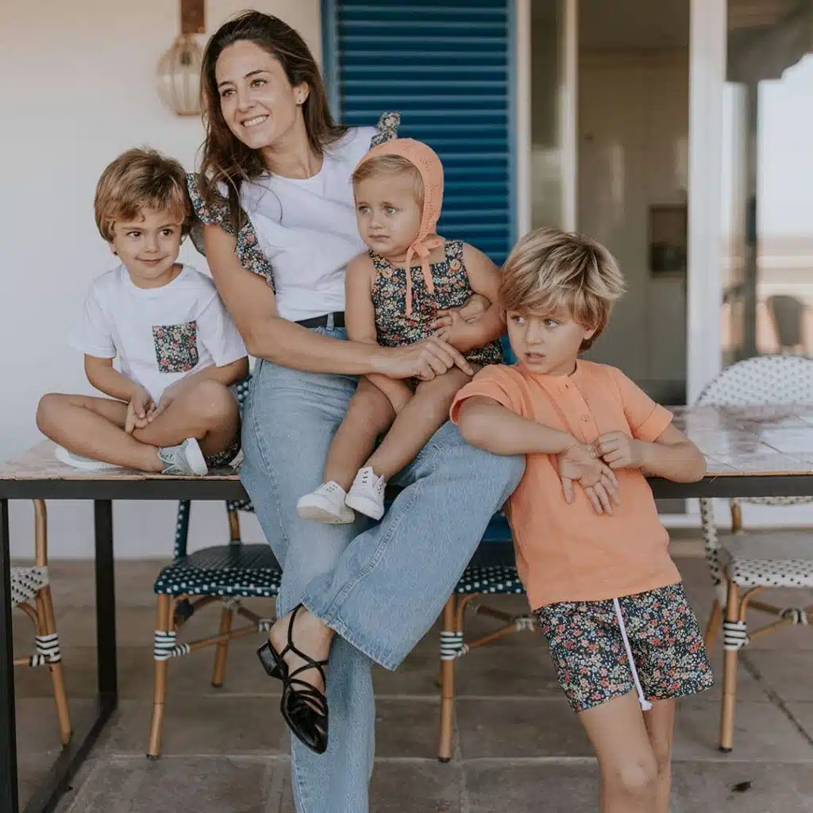
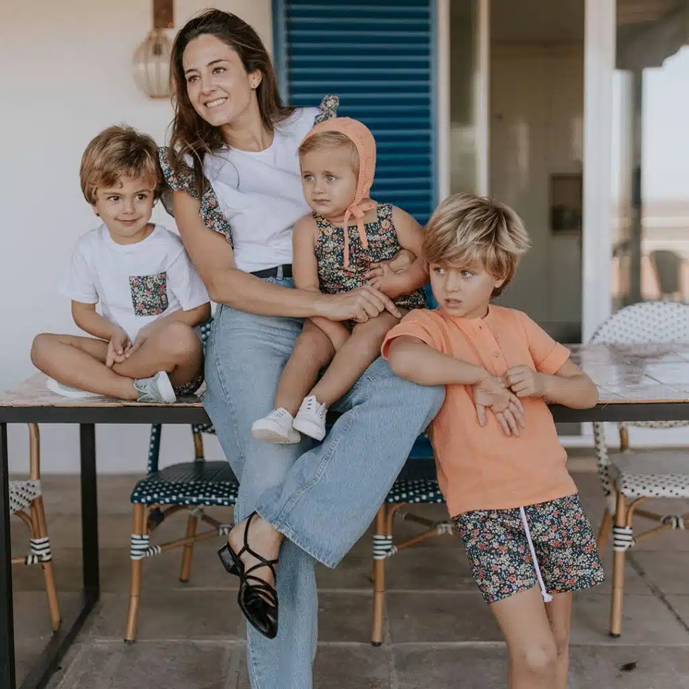

Moda urbana con estilo y responsabilidad
En Estilo Vivo Jenif ofrecemos ropa urbana, cómoda y con materiales responsables con el medio ambiente. Descubre prendas modernas que reflejan tu autenticidad y compromiso con el planeta.
 Ver productosEn Estilo Vivo Jenif ofrecemos ropa urbana, cómoda y con materiales responsables con el medio ambiente. Descubre prendas modernas que reflejan tu autenticidad y compromiso con el planeta.
 Ver productos